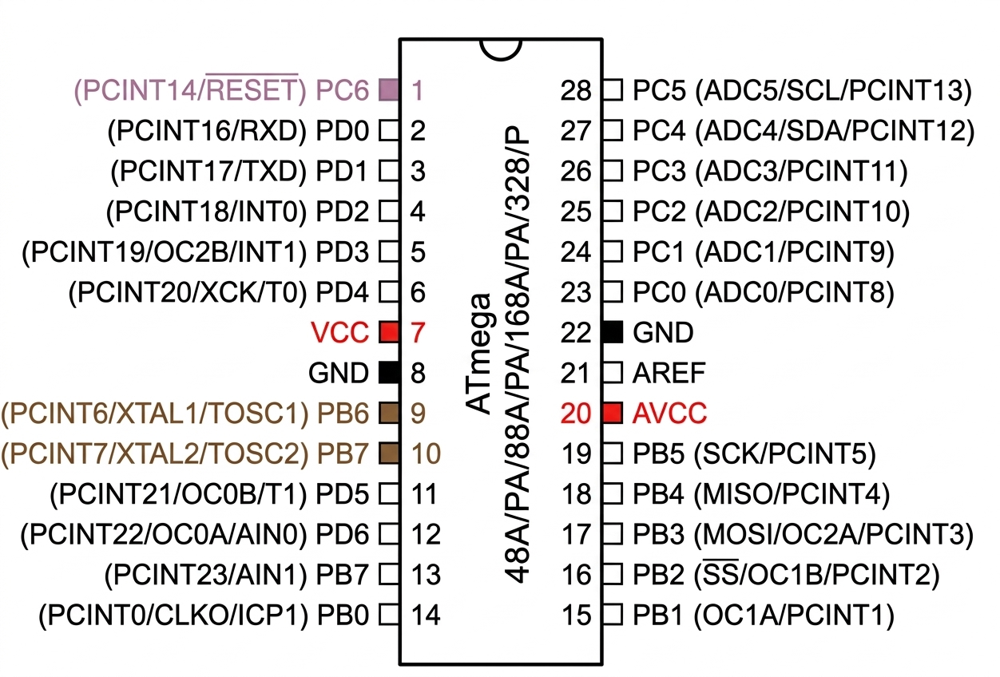

CIRCUITO MÍNIMO. μMC STANDALONE
INTRODUCCIÓN
Este artículo muestra directamente como hacer las conexiones de los microcontrolador AVR de la serie ATmega48A/PA/88A/PA/168A/PA/328/P, con un circuito mínimo para que pueda funcionar independientemente, standalone es decir, fuera de cualquier placa de desarrollo.
El recorrido que estudiaremos es:

1. LA SERIE ATmega48A/PA/88A/PA/168A/PA/328/P
Para el diseño o prueba de un proyecto electrónico podemos utilizar una placa de desarrollo, pero en su prototipado o implementación no podemos dejar una tarjeta de desarrollo como Arduino Uno o Arduino Nano como parte del circuito porque haría caro el proyecto y demasiado voluminoso. Para ello debemos montarlo en un circuito con los componentes mínimos necesarios para que el microcontrolador funcione de forma independiente, standalone.
En este proyecto utilizaremos un microcontrolador ATmega168P. Como hemos visto anteriormente, los microcontroladores de la serie ATmega48A/PA/88A/PA/168A/PA/328/P tienen características similares y difieren sólo en el tamaño se la memoria, soporte de bootloader, y el tamaño de los vectores de interrupción. La siguiente tabla resume estas características..
| Microcontrolador | Memoria Flash | SRAM | EEPROM | Soporte Bootloader | Firma Digital (Signature) |
|---|---|---|---|---|---|
| ATmega48P | 4 KB | 512 B | 256 B | No (Solo ISP) | 0x1E 0x92 0x0A |
| ATmega88P | 8 KB | 1 KB | 512 B | Sí | 0x1E 0x93 0x0F |
| ATmega168P | 16 KB | 1 KB | 512 B | Sí | 0x1E 0x94 0x0B |
| ATmega328P | 32 KB | 2 KB | 1 KB | Sí | 0x1E 0x95 0x0F |
2. COMPRENSION DEL PINOUT DE LA SERIE ATmega48A/PA/88A/PA/168A/PA/328/P
El pinout o patillaje del dispositivo lo podemos ver en la siguiente imagen del datasheet de la serie ATmega48A/PA/88A/PA/168A/PA/328/P que brinda Microchip

Para un ATmega de esta serie utilizado de forma independiente, hay que identificar como mínimo:
- VCC ────► Pin 7
- GND ────► Pin 8 y pin 22
- AVCC ────► Pin 20
- RESET ────► Pin 1
- XTAL1 ◄──► Pin 9
- XTAL2 ◄──► Pin 10

Una vez conocido el pinout, podemos montar el microcontrolador directamente en una placa de pruebas o en una PCB. Esto es lo que normalmente se denomina una configuración standalone: el ATmega funciona como el microcontrolador principal del circuito y no depende de una placa Arduino para ejecutar el programa.
3. ALIMENTACIÓN DEL MICROCONTROLADOR
El primer paso consiste en conectar correctamente la alimentación del microcontrolador:
VCC y AVCC deben conectarse a la tensión de alimentación correspondiente y GND a la referencia del circuito. La familia ATmega48A/88A/168A/328P admite, según las condiciones especificadas en la hoja de datos, un rango amplio de alimentación especificado entre 1,8 V y 5,5 V.
- VCC (pin 7) → positivo de la alimentación.
- AVCC (pin 20) → positivo de la alimentación.
- GND (pin 8) → tierra.
- GND (pin 22) → tierra.
AVCC debe conectarse a VCC incluso si el programa no utiliza el convertidor analógico-digital (ADC), ya que este pin también está relacionado con la alimentación del puerto C.

4. CONDENSADORES DE DESACOPL0
Se recomienda colocar dos condensadores cerámicos de 100 nF entre VCC y GND y entre AVCC y GND, situados lo más cerca posible del microcontrolador. Su función es reducir las pequeñas perturbaciones de la tensión de alimentación producidas por los cambios de corriente internos del microcontrolador.

5. CONEXIÓN DEL RESET
El pin RESET (pin 1) debe mantenerse normalmente en nivel alto para que el microcontrolador pueda ejecutar el programa. Para ello, se conecta una resistencia de aproximadamente 10 kΩ entre RESET y VCC.
La resistencia actúa como pull-up y evita que el pin RESET quede flotante, reduciendo la posibilidad de reinicios provocados por perturbaciones eléctricas.

6. ESTABLECER EL ORIGEN DE LA SEÑAL DE RELOJ DEL MICROCONTROLADOR
El reloj es la referencia temporal utilizada por el núcleo AVR y por muchos de sus periféricos. Determina la velocidad de ejecución de las instrucciones y la frecuencia de funcionamiento de los temporizadores, el ADC y otros periféricos. El reloj puede provenir de un oscilador interno o de un cristal externo.
A partir de aquí aparecen dos posibilidades:
- Utilizar el reloj interno, reduciendo el circuito externo.
- Utilizar un cristal o resonador externo, conectándolo a XTAL1 y XTAL2 según las condiciones de la hoja de datos.
Elegir entre oscilador interno o externo es la decisión central para establecer la señal de reloj de un microcontrolador. Al seleccionar el tipo de oscilador, estás definiendo cuál será el origen físico que generará los impulsos eléctricos (latidos) que marcan el ritmo de trabajo de la CPU y los periféricos del chip.
De fábrica, los microcontroladores de la serie ATmega48A/PA/88A/PA/168A/PA/328/P vienen configurados para priorizar la compatibilidad y la seguridad en la primera conexión. El chip arranca utilizando su oscilador RC interno calibrado a 8.0 MHz, pero con el fusible de división por ocho (CKDIV8) activado por defecto. Esto reduce la frecuencia real del reloj del sistema a 1.0 MHz. El fabricante elige esta velocidad tan baja deliberadamente para garantizar que cualquier programador de bajo costo (como un USBasp o un Arduino como ISP) pueda comunicarse con el dispositivo nada más sacarlo de la caja, sin riesgo de fallos por desincronización. Una vez que establezcas la comunicación inicial, puedes reprogramar los fusibles CKSEL y CKDIV8 para desactivar este divisor o para conmutar a un cristal de cuarzo externo si tu aplicación requiere mayor velocidad o precisión en el tiempo.
Para que el microcontrolador funcione a 8 MHz, es necesario reconfigurar los fuses para desactivar la división por 8. Esto se puede hacer mediante un programador ISP como el USBasp y el software AVRDUDE, que permite modificar los fuses del microcontrolador. Para hacerlo puedes consultar la sección de programación de fuses en este sitio.
Si deseamos utilizar un cristal externo para obtener una mayor precisión en la frecuencia del reloj, entonces sí será necesario conectar el cristal y sus condensadores asociados. O si el microcontrolador ya ha sido configurado previamente para usar un cristal externo, entonces también será necesario conectar el cristal y sus dos capacitores de 22 pF para que el microcontrolador pueda arrancar correctamente.
Si el circuito embebido requiere una alimentación externa, el USBasp y el circuito deben compartir la misma referencia de tierra (GND).
4. CONEXIÓN DEL CIRCUITO EMBEBIDO
Una vez establecidas las conexiones básicas del microcontrolador y conectado el programadoer USBasp, podemos conectar el ciruito del proyecto, en este caso el LED que utilizaremos para comprobar el funcionamiento del programa.
El LED no debe conectarse directamente al pin PB0 sin una resistencia. La resistencia limita la corriente que circula por el LED y protege tanto al LED como al circuito de salida del microcontrolador.
Una conexión sencilla es:
PB0 (pin 14) → resistencia de 220 Ω → LED → GND
Cuando PB0 se encuentra en nivel alto, existe una diferencia de potencial entre el pin y GND. Esta diferencia de potencial hace que circule corriente a través de la resistencia y del LED, provocando que el LED emita luz.

La resistencia de 220 Ω es solamente un valor de ejemplo. El valor adecuado depende de la tensión de alimentación, de la caída de tensión del LED y de la corriente que se quiera hacer circular. En todos los casos deben respetarse las especificaciones eléctricas del microcontrolador, especialmente los límites de corriente de sus pines.
Al integrar las conexiones anteriores obtenemos el circuito mínimo del ATmega168 para este ejemplo: alimentación, desacoplo, resistencia de pull-up en RESET y LED conectado a PB0. El microcontrolador puede funcionar de forma independiente en la protoboard utilizando su oscilador interno.